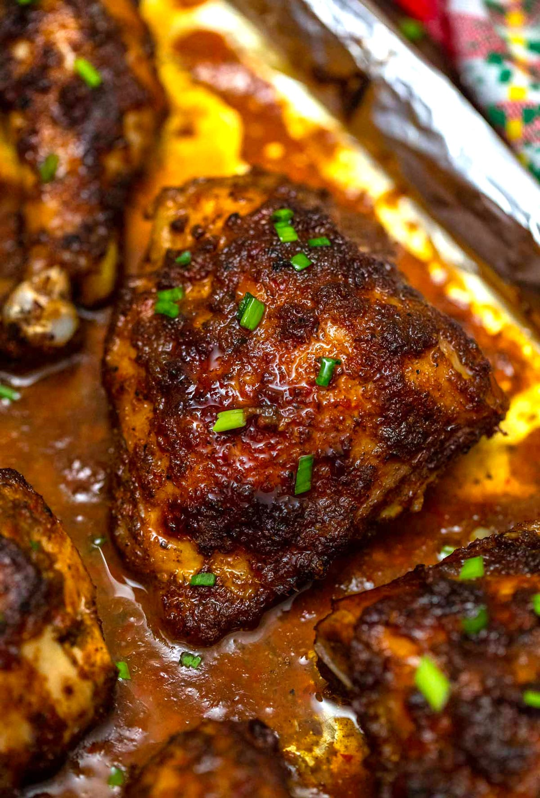

Jerk Chicken

Ingredients
- 1/2 cup malt vinegar (or white vinegar)
- 2 tablespoons dark rum
- 2 Scotch bonnet peppers (or habaneros), with seeds, chopped
- 1 red onion, chopped
- 4 green onion tops, chopped
- 1 tablespoon dried thyme or 2 tablespoons fresh thyme leaves, chopped
- 2 tablespoons extra virgin olive oil
- 2 teaspoons kosher salt
- 2 teaspoons freshly ground black pepper
- 4 teaspoons ground allspice
- 4 teaspoons ground cinnamon
- 4 teaspoons ground nutmeg
- 4 teaspoons ground ginger
- 2 teaspoons molasses
- 1/2 cup lime juice
- 1 (5 to 6 pound) chicken, cut in half lengthwise
- Kosher salt and freshly ground pepper
Preparing the Marinade
- Put the vinegar, rum, hot peppers, onion, green onion tops, thyme, olive oil, salt, pepper, allspice, cinnamon, nutmeg, ginger, and molasses into a blender. Pulse until mostly smooth.
- Place the chicken in a large freezer bag, or in a large non-reactive bowl or baking dish. Pour lime juice over the chicken and coat well. Rub the jerk paste over the chicken pieces and coat well (it helps to use gloves!). Seal the bag or cover the chicken in the pan with plastic wrap. Refrigerate overnight.
- When you are ready to cook the chicken, remove chicken from the marinade bag or pan. Put the remaining marinade into a small saucepan. Bring to a boil, reduce heat and simmer for 10 minutes. Set aside to use as a basting sauce for the chicken. If you want you can reserve a little of the marinade (once boiled for 10 minutes since it has been in contact with raw chicken) to serve with the chicken or to mix with some ketchup and a dash of soy sauce for a serving sauce.
Cooking Instructions
Grilling Method
Preheat grill to medium high. Sprinkle chicken halves with salt and pepper. Place chicken halves, skin side down on the grill grates. Cover. Cook for about 40-50 minutes, keeping the internal grill temperature between 350°F and 400°F, turning the chickens occasionally and basting with marinade, until the chicken halves are cooked through.
The chicken is done when the juices run clear (not pink) when a knife tip is inserted into both the chicken breast and thigh, about 165°F for the breast and 170°F for the thigh when checked with a meat thermometer.
Transfer chicken to platter. Tent loosely with foil to keep warm and let stand 15 minutes.
Oven Method
Preheat oven to 350°F. Place chicken halves in a rimmed baking pan, skin side up. Roast until chicken halves are cooked through, about 40-50 minutes.
The chicken is done when the juices run clear (not pink) when a knife tip is inserted into both the chicken breast and thigh, or a meat thermometer reads about 165°F for the breast and 170°F for the thigh.
Transfer chicken to platter. Tent loosely with foil to keep warm and let stand 15 minutes.
Cut chicken into pieces. Serve with black beans and rice.
Enjoy!